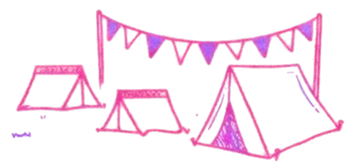
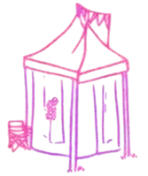
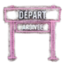
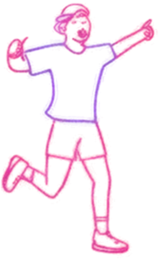

SUIVI DE TON PARCOURS
\ | /
PLEIN
PHARE




SIGNAL HORAIRE BACKYARD
Avertisseur sonore toutes les 60 minutes pendant l'effort.
CLASSEMENT LIVE
👑 1. Clément21,1 km
🥈 2. Toi14,2 km
🥉 3. Jules13,9 km
DÉTAILS DU PARCOURS
Boucle Backyard de 6,706 km • D+ 180m par tour
MON DIPLÔME & PPS
Générez votre attestation de fin de course ou déposez votre Parcours de Prévention Santé.
COMMUNAUTÉ
Rejoins les coureurs de la communauté sur Strava.